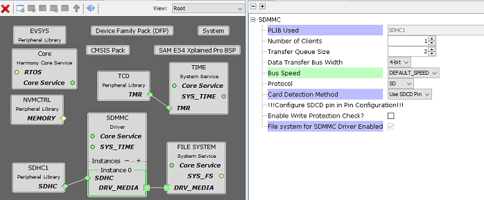
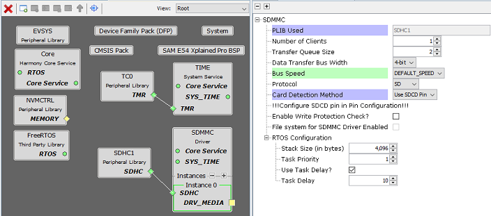
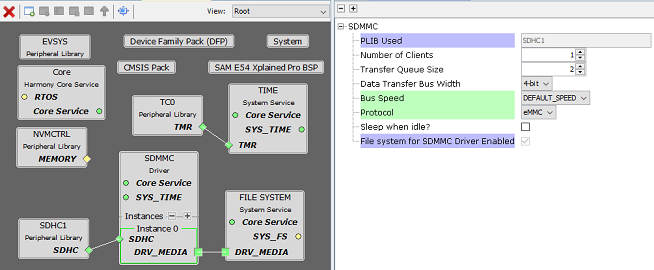

SDMMC Driver Library should be configured via MHC. The following figures show the MHC configuration window for SDMMC driver and brief description.
Common User Configuration for all Instances
Driver Mode:
Allows User to select the mode of driver(Asynchronous or Synchronous). This setting is common for all the instances.
Only Asycnhronous mode is supported for now
Instance Specific User Configurations
Asynchronous Mode with SD protocol and File-System

Asynchronous Mode with SD protocol, RTOS and without File-System

Asynchronous Mode with eMMC protocol and File-System

PLIB Used:
Specifies the peripheral library used by the SDMMC driver. This can either be the HSMCI PLIB or the SDHC PLIB.
Number of Clients:
Specifies number of clients that can access the specific instance of the driver
Transfer Queue Size:
Specifies maximum number of requests that can be queued
This Configuration is displayed only in Asynchronous mode
Data Transfer Bus Width:
Specifies the Bus width to be used for data transfer (1-Bit, 4-Bit)
Bus Speed:
Specifies Bus Speed to be used for Communication with SD-card (DEFAULT_SPEED, HIGH_SPEED)
Standard SD-Cards only support Default Speed
SD-Cards with High Capacity support Both Default and High Speed
Protocol:
Specifies whether SD or eMMC protocol is enabled in the SDMMC driver.
Sleep when idle?
This option is available only when eMMC protocol is enabled.
Enabling this option puts the eMMC card in sleep mode when no data transfers are pending. When a data transfer is requested, the SDMMC driver brings the eMMC card out of sleep mode. Refer to the eMMC datasheet for the switching time from standby to sleep and vice-versa.
Card Detection Method:
Specifies the card detection method used by the SDMMC driver. Either SDCD pin or Polling method can be used to detect insertion/removal of SD Card
Polling Interval (ms):
If the Card Detection Method is selected as "Use Polling", then this option specifies the rate at which the SDMMC driver checks for SD Card insertion/removal
File system for SDMMC Driver Enabled:
Indicates whether SDMMC driver will register its services with the file system or not.
This option is automatically checked when the file system is connected to the SDMMC driver.
RTOS Settings:
This configuration is displayed only in asynchronous mode
Stack Size (in bytes):
Specifies the number of bytes to be allocated on the stack for the SDMMC driver task of the instance
Task Priority:
Specifies priority for the SDMMC driver task thread. The value can vary based on RTOS used
Use Task Delay?
When enabled the SDMMC driver task will be scheduled out voluntarily after every run based on the delay configured.
Task Delay:
Specifies the duration the task has to go to sleep after every run.
Should be configured carefully based on the application need and number of task running along in the system
RTOS Settings For MicriumOS-III RTOS
Below additional options are visible in drivers instance RTOS settings when the MicriumOS-III is added into project graph

Maximum Message Queue Size:
This argument specifies the maximum number of messages that the task can receive through internal message queue.
A MicriumOS-III task contains an optional internal message queue (if OS_CFG_TASK_Q_EN is set to DEF_ENABLED in os_cfg.h).
The user may specify that the task is unable to receive messages by setting this argument to 0
Task Time Quanta:
The amount of time (in clock ticks) for the time quanta when Round Robin is enabled.
If you specify 0, then the default time quanta will be used which is the tick rate divided by 10.
Task Specific Options:
Contains task-specific options. Each option consists of one bit. The option is selected when the bit is set.
The current version of MicriumOS-III supports the following options:
Stack checking is allowed for the task:
Specifies whether stack checking is allowed for the task
Stack needs to be cleared:
Specifies whether the stack needs to be cleared
Floating-point registers needs to be saved:
Specifies whether floating-point registers are saved.
This option is only valid if the processor has floating-point hardware and the processor-specific code saves the floating-point registers
TLS (Thread Local Storage) support needed for the task:
If the caller doesn�t want or need TLS (Thread Local Storage) support for the task being created.
If you do not include this option, TLS will be supported by default. TLS support was added in V3.03.00